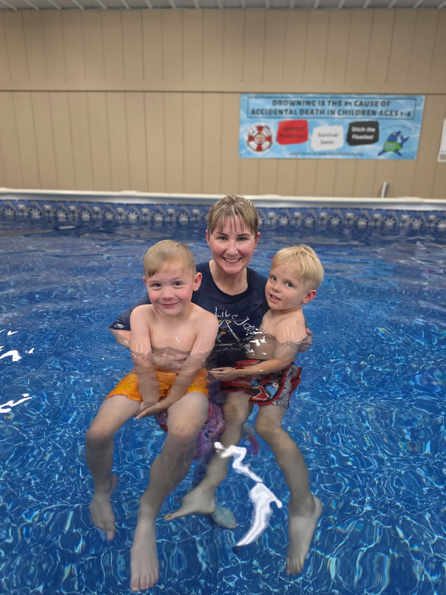

ISR Certified Instructor · Grayson County, KY
Every Child Deserves to Learn Water Survival.
1-on-1 survival swim lessons teaching infants and children to roll, float, and wait for rescue — and children 18 months and older to swim-float-swim. Starting at 6 months. In memory of Vinny.
Ages 6 Months+
ISR Certified
Licensed & Insured
Swim-Float-Swim · 18 Months+
Grayson & Surrounding Counties
Est. 2023

6 Weeks
to a survival swimmer